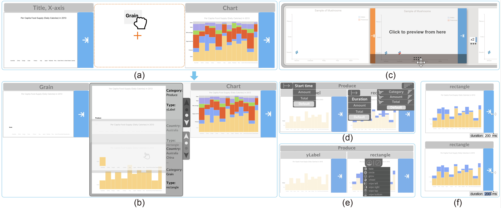

CAST2: Authoring Data-Driven Chart Animations
Yunhai Wang*, Yuancheng Shen*,Yue Zhao, Tong Ge, Haoyan Shi, Bongshin Lee

Figure 1: CAST enables the interactive construction of a variety of chart animations. Its interface consists of four panels: (a) data panel; (b) chart panel; (c) animation panel; and (d) keyframe panel. In this case, the system is about halfway through the animation of a 'bar chart', showing the distribution of the population by gender in different age groups. Please visit the CAST's website ( https://canisstudio.github.io/CAST) to see the animation.
Abstract
We present an authoring tool, called CAST, that enables the interactive creation of chart animations. It introduces the visual specification of chart animations consisting of keyframes that can be played sequentially or simultaneously, and animation parameters (e.g., duration, delay). Building on Canis, a declarative chart animation grammar that leverages data-enriched SVG charts, CAST supports auto-completion for constructing both keyframes and keyframe sequences. It also enables users to refine the animation specification (e.g., aligning keyframes across tracks to play them together, adjusting delay) with direct manipulation and other parameters for animation effects (e.g., animation type, easing function) using a control panel. In addition to describing how CAST infers recommendations for auto-completion, we present a gallery of examples to demonstrate the expressiveness of CAST and a user study to verify its learnability and usability. To improve both expressiveness and usability, we present version 2.0 of CAST, which further supports the animation of various types of visual marks within the same keyframe group, binding data attributes to animation timing properties, and consistent user interactions. Through the reproduction and discussion, we demonstrate the effectiveness of the new version. Finally, we discuss the limitations and potentials of CAST as well as directions for future research.
Extending Canis with Nested Selection

Figure 2: Comparing the Canis specifications for achieving the animation in Scenario 1 without (a) and with the nested selection (d). (b,e) the intermediate mark-unit trees generated during the compilation of the given specifications in (a,d); (c) aligning three timelines corresponding to three types of visual marks requires careful specification of duration and delays; whereas the one in (f) is inherently represented as a linear line.
User Interface and Interaction

Figure 3: The animation of the faceted dot plot within CAST. The interface facilitates the sorting of keyframes to enhance the animation control. Additionally, the inclusion of hierarchical headers, which represent data attributes for grouping the animation, helps users understand the animation's organization more effectively and provides a consistent way for merging the groups.
Bi-directional Next Keyframe Selection

Figure 4: Illustration of the user interaction workflow in CAST2, highlighting the sequence of steps and interactions involved in crafting an animation. Initially, the system presents potential next keyframes to the user, enabling a preview of the suggestion by hovering over it (a). Subsequently, the user can select specific marks within the desired next keyframe to guide the system's suggestions (b). Following this, the system automatically refreshes the recommendation list (c).
Data-driven Timing Specification

Figure 5: A visual demonstration of how to adjust timing attributes within CAST2. Specifically, (a) displays the foundational data table used for creating the Gantt chart. Then, (b) shows the process of arranging the keyframes by utilizing the ``Total'' data attribute. Lastly, (c) illustrates linking the start time and duration to specific data attributes.
Type-aware Keyframes Auto-completion

Figure 6: CAST2 suggests additional marks to be selected based on the user-selected multiple types of marks from the input chart. Selecting (a) a label in the y-axis and one dot cell from the bottom row results in the system highlighting all dots and the associated label in that row (b). When (c) a label in the y-axis and a dot cell from two distinct rows are chosen, the system suggests all dot cells and y-axis labels (d).
Next Keyframe Recommendation

Figure 7: Illustrating the keyframe sequence auto-completion process with CAST2. (a) The entire sequence of user selection and the system's recommendation involved in authoring the animation in Scenario 4, where the selected keyframe is indicated by a mouse icon; (b, c) the procedure for computing the suggested next keyframes, where the mark units in all recommended keyframes consist of the same type of visual marks in (b) or different types in (c).
Example Gallery

Figure 6: Eight example chart animations demonstrating the expressiveness of CAST. We used the first seven chart animations (a-g) as tasks in our user study in Section 4. In addition to these, more examples can be found with the input charts, descriptions, and videos illustrating the creation processes in the website ( https://canisstudio.github.io/CAST).